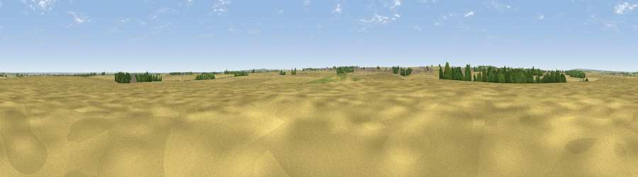

Viewpoint near Wootton
#34165 in England · top 67% of its area beats it · near WoottonThe view, rendered

A 360° render of this exact spot computed from the terrain model, tree cover and land cover — summer colours, afternoon light, calibrated against photographs of famous viewpoints. Real trees, hedges and buildings will differ in detail.
The panorama
Grey silhouette: terrain skyline in each direction (720 bearings, Earth curvature and refraction included). Dashed green: skyline with trees (+15 m) and buildings (+8 m) as obstacles. Blue strip: how far the ground is visible on each bearing.
Where the view opens
Wedge length = distance to the farthest visible ground on that bearing (vegetation-aware). Rings at 10, 25 and 50 km.
What fills the view
86% cropland · 7% grassland · 3% woodland · 2% built-up ·
Angular shares of the visible panorama (visual magnitude), not map area. Landscape diversity 0.25 (0–1 Shannon).
Key numbers
More beautiful places nearby
The staircase of upgrades: each row has a higher view potential than everything closer. Driving times are estimates from straight-line distance, calibrated against real road routing — check an actual route before setting out.
| Place | Direction | Drive | Score |
|---|---|---|---|
| Elsham Hill | SSW · 4 km | ~9 min | 52.6 |
| Saxby Wold | W · 5 km | ~11 min | 53.9 |
| Viewpoint near South Ferriby | WNW · 6 km | ~13 min | 54.8 |
| Viewpoint near South Ferriby | NW · 6 km | ~13 min | 58.1 |
| Fonaby Top | SSE · 16 km | ~28 min | 60.7 |
| Viewpoint near Alkborough | WNW · 18 km | ~31 min | 62.1 |
| Viewpoint near Burton Stather | W · 18 km | ~31 min | 62.4 |
| Viewpoint near Nettleton | SSE · 18 km | ~32 min | 64.7 |
53.63751, -0.41853 · source: osm peak · position refined by local search. Computed location — check access rights before visiting.